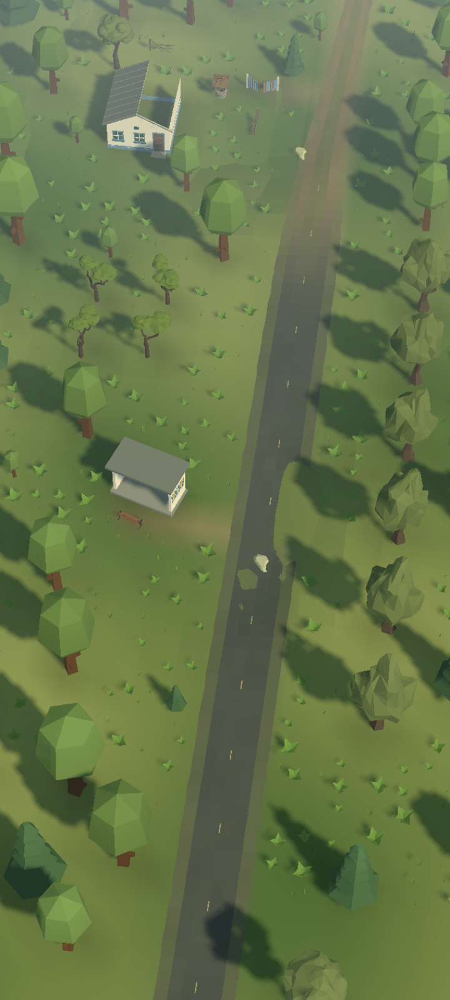
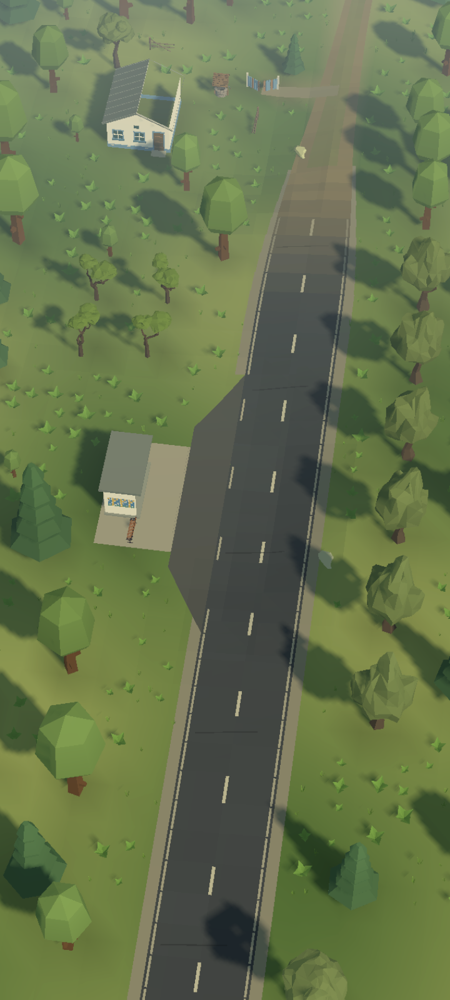
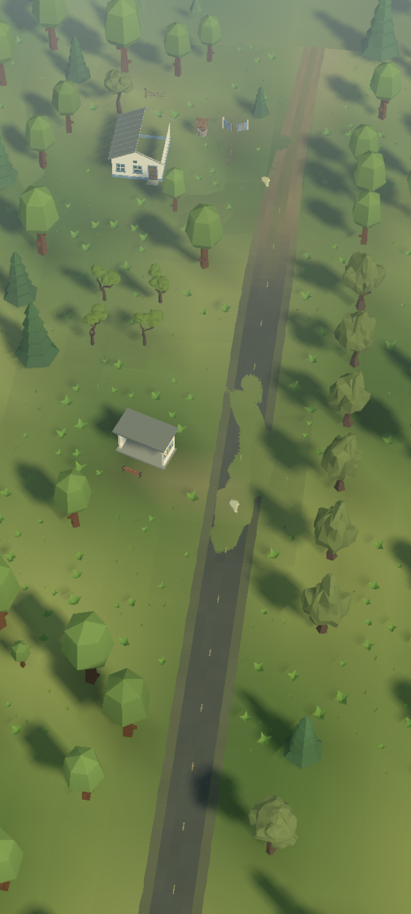
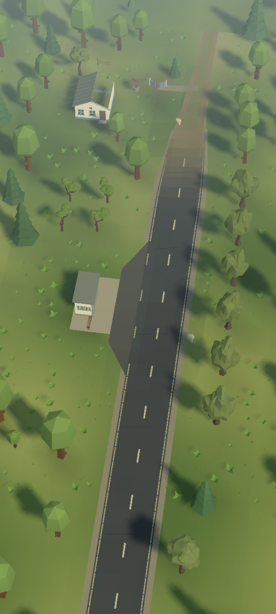
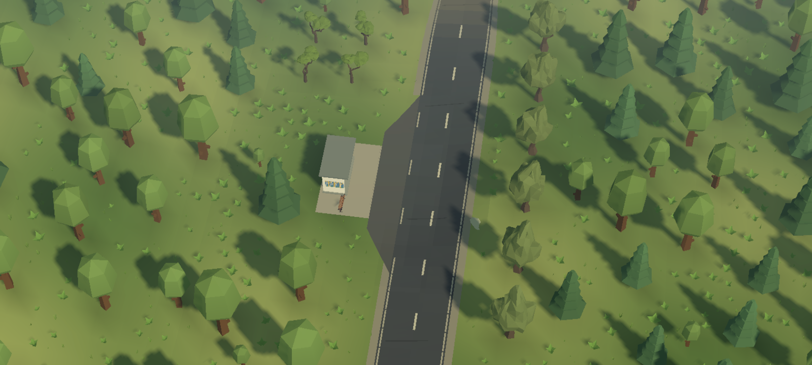

Суцільна проїжджа частина, вицвіла розмітка, узбіччя й невелика заїзна кишеня. Зупинка повернута до дороги; лавка, майданчик та мозаїка читаються разом. Той самий ракурс показує різницю.





Native Editor captures, без player build. Бюджети геометрії й Game View counters не є вимірами FPS телефону.